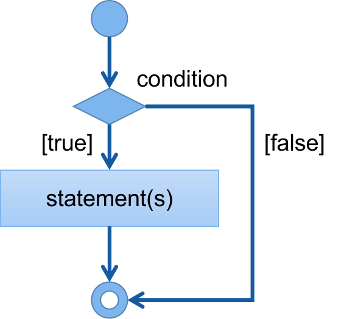
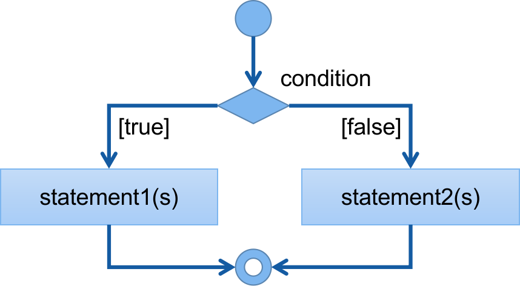
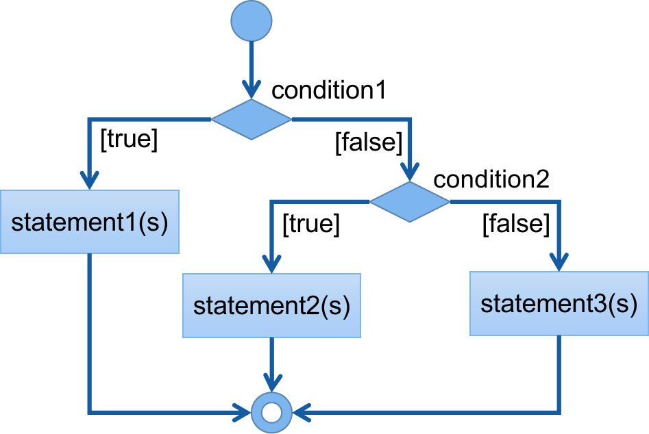

Learning programming with Python
A post by Cuber
To control the way the program executes. Sometimes we only want certain codes to run when a specific condition is met. Python use if statements to control flow that depends on conditions.
To implement decision-making in a program, Python has an if statement, if-else statement, and if-elif statement.
The simplest form of the if statement. It executes a block of code only if a condition is correct.
The syntax:
if condition:
statement(s)
Condition is an expression that returns a boolean value. the statement(s) executes if the condition is True. After the condition, there is a colon sign (:) ending the first line.
Python does not use curly brackets to indicate blocks. The statements are indented to make them part of the if statement block.
aString = "greet"
if aString == "greet":
name = input("What is your name?")
print("Hello, how are you ", name)
Output
What is your name?Civa Hello, how are you Civa >
if the condition is False, the statements are skipped and exit the if statement to the next line code.
To specify a statement to execute if the condition is true and another group statement if the expression is false.
The syntax
if condition:
statement1(s)
else:
statement2(s)
if the condition is True statement1(s) will execute. And if the expression is False, statement2(s) will execute.
There is a colon sign (:) after the condition and after the else keyword. The statements are indented to indicate block.
The following example checks the user's weather information and gives appropriate messages according to weather conditions.
weather =input("Enter weather ")
if weather.lower() == "raining":
print("Ride bus")
else:
print("Take a Walk")
Output
Enter weather sunny Take a Walk >
The program prompts users to enter weather conditions. The user enters 'sunny' and presses enter. the if statement checks if the user entered "raining". the lower() function makes sure the letter case is the same. The condition returns false, so display "Take a walk".
to execute different statements under multiple conditions.
The syntax
if condition1:
statement(s)1
elif condition2:
statement(s)2
else:
statement(s)3
Example
score = 67
if score > 80:
grade = 'A'
elif score > 70:
grade = 'B'
elif score > 50:
grade = 'C'
elif score > 40:
grade = 'D'
else:
grade = 'F'
print("Score: ", score)
print("Grade: ", grade)
Score: 67 Grade: C >